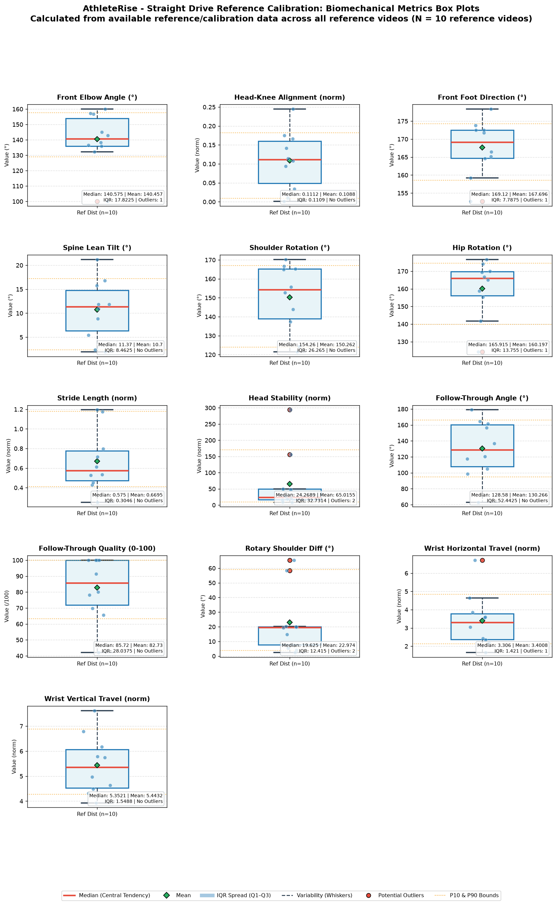
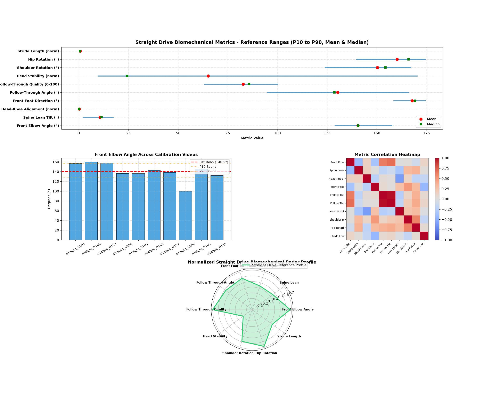

Shot Type: Straight Drive | Handedness: MIXED
10
10
0
Empirical Reference
P10 - P90
Each biomechanical metric is treated independently across all reference videos.
| Metric | Valid Samples | Mean | Median | Std Dev | Variance | Min | Max | Q1 (P25) | Q3 (P75) | IQR | P10 | P90 | P10-P90 Range |
|---|---|---|---|---|---|---|---|---|---|---|---|---|---|
| Front Elbow Angle (°) | 10 | 140.46 | 140.57 | 16.45 | 270.46 | 99.98 | 159.97 | 136.00 | 153.82 | 17.82 | 128.89 | 157.53 | 128.89 - 157.53 |
| Spine Lean Tilt (°) | 10 | 10.70 | 11.37 | 5.93 | 35.20 | 1.95 | 21.21 | 6.31 | 14.77 | 8.46 | 2.35 | 17.22 | 2.35 - 17.22 |
| Head-Knee Alignment (norm) | 10 | 0.11 | 0.11 | 0.07 | 0.01 | 0.00 | 0.24 | 0.05 | 0.16 | 0.11 | 0.01 | 0.18 | 0.01 - 0.18 |
| Front Foot Direction (°) | 10 | 167.70 | 169.12 | 7.28 | 53.00 | 152.67 | 178.34 | 164.71 | 172.50 | 7.79 | 158.53 | 174.29 | 158.53 - 174.29 |
| Shoulder Rotation (°) | 10 | 150.26 | 154.26 | 16.91 | 286.04 | 121.50 | 170.24 | 138.95 | 165.22 | 26.27 | 123.97 | 167.04 | 123.97 - 167.04 |
| Hip Rotation (°) | 10 | 160.20 | 165.91 | 15.44 | 238.25 | 124.23 | 176.67 | 156.12 | 169.88 | 13.76 | 139.87 | 174.47 | 139.87 - 174.47 |
| Stride Length (norm) | 10 | 0.67 | 0.57 | 0.29 | 0.09 | 0.25 | 1.19 | 0.47 | 0.78 | 0.30 | 0.41 | 1.18 | 0.41 - 1.18 |
| Head Stability (norm) | 10 | 65.02 | 24.27 | 86.82 | 7537.55 | 8.96 | 293.94 | 16.68 | 49.41 | 32.73 | 9.68 | 170.23 | 9.68 - 170.23 |
| Follow-Through Angle (°) | 10 | 130.27 | 128.58 | 34.21 | 1170.22 | 63.12 | 178.98 | 107.94 | 160.38 | 52.44 | 94.96 | 166.01 | 94.96 - 166.01 |
| Follow-Through Quality (0-100) | 10 | 82.73 | 85.72 | 18.44 | 340.19 | 42.08 | 100.00 | 71.96 | 100.00 | 28.04 | 63.31 | 100.00 | 63.31 - 100.00 |
| Rotary Shoulder Diff (°) | 10 | 22.97 | 19.62 | 20.66 | 426.65 | 2.43 | 65.46 | 7.70 | 20.12 | 12.41 | 3.79 | 59.16 | 3.79 - 59.16 |
| Wrist Horizontal Travel (norm) | 10 | 3.40 | 3.31 | 1.40 | 1.95 | 1.65 | 6.71 | 2.36 | 3.78 | 1.42 | 2.13 | 4.85 | 2.13 - 4.85 |
| Wrist Vertical Travel (norm) | 10 | 5.44 | 5.35 | 1.13 | 1.27 | 3.93 | 7.63 | 4.52 | 6.07 | 1.55 | 4.27 | 6.88 | 4.27 - 6.88 |
Visualizing central tendency (median & mean), spread (IQR box Q1–Q3), variability (whiskers), and potential outliers across reference videos.


| Video File | Status | Stance | Duration | FPS | Frames | Resolution | Pose Detection % | Contact Frame | Notes |
|---|---|---|---|---|---|---|---|---|---|
| straight_0101.avi | VALID | Right | 3.0s | 25 | 75 | 1280x720 | 100.0% | 60 | |
| straight_0102.avi | VALID | Left | 3.4s | 25 | 85 | 1280x720 | 100.0% | 44 | |
| straight_0103.avi | VALID | Right | 2.2s | 25 | 55 | 1280x720 | 100.0% | 16 | |
| straight_0104.avi | VALID | Right | 2.92s | 25 | 73 | 1280x720 | 100.0% | 15 | |
| straight_0105.avi | VALID | Right | 3.6s | 25 | 90 | 1280x720 | 100.0% | 62 | |
| straight_0106.avi | VALID | Right | 3.6s | 25 | 90 | 1280x720 | 100.0% | 18 | |
| straight_0107.avi | VALID | Right | 3.0s | 25 | 75 | 1280x720 | 100.0% | 43 | |
| straight_0108.avi | VALID | Right | 3.96s | 25 | 99 | 1280x720 | 100.0% | 33 | |
| straight_0109.avi | VALID | Right | 4.76s | 25 | 119 | 1280x720 | 100.0% | 67 | |
| straight_0110.avi | VALID | Right | 3.2s | 25 | 80 | 1280x720 | 100.0% | 39 |